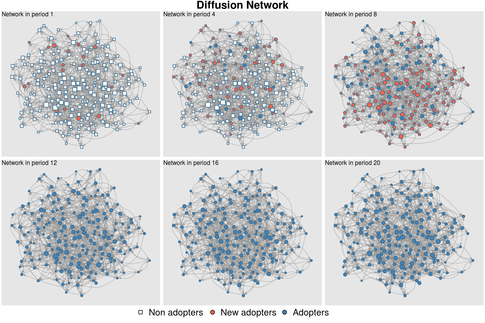
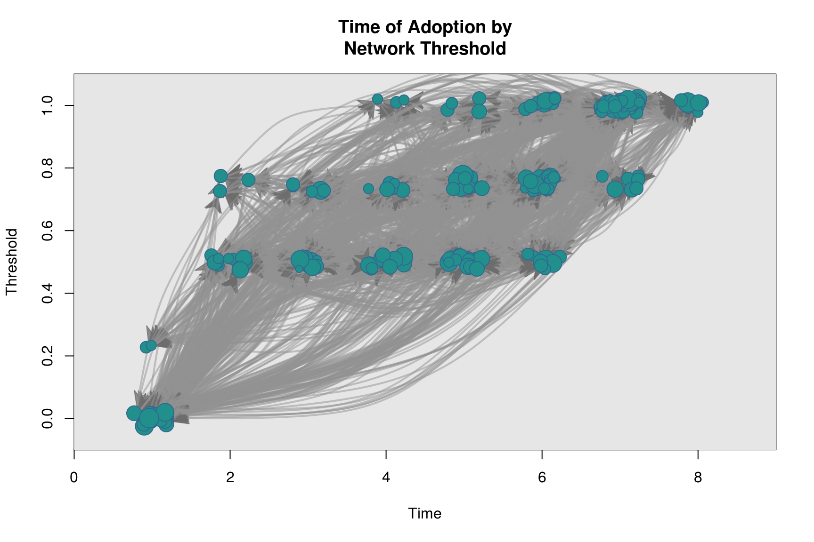
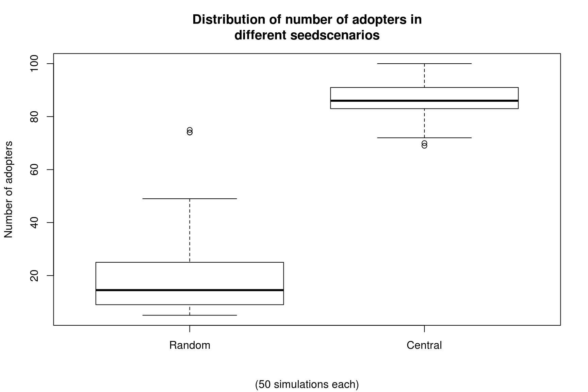

Simulating diffusion networks: Using the rdiffnet function
George G. Vega Yon
November 17, 2015
Source:vignettes/introduction-to-netdiffuser.Rmd
introduction-to-netdiffuser.Rmd
Simulating diffusion networks: Using the rdiffnet function
In this example we compare 3 different simulations that use the same baseline (seed) network, a scale-free generated via rgraph_ba (Barabasi-Albert) with parameter m=4 (number of new ties that each added node includes in the graph). The only difference between the three simulations is that we use a different set of seed adopters, “random”, “central” and “marginal”. All three cases start with 5% of the network having adopted the innovation.
##
## Attaching package: 'netdiffuseR'## The following object is masked from 'package:base':
##
## %*%s <- 11532
set.seed(s)
diffnet_ran <- rdiffnet(200, 20, "random", seed.p.adopt = .1,
seed.graph = "small-world",
rgraph.args = list(undirected=FALSE, k=4, p=.5),
threshold.dist = function(x) 0.3)
set.seed(s)
diffnet_cen <- rdiffnet(200, 20, "central", seed.p.adopt = .1,
seed.graph = "small-world",
rgraph.args = list(undirected=FALSE, k=4, p=.5),
threshold.dist = function(x) 0.3)
set.seed(s)
diffnet_mar <- rdiffnet(200, 20, "marginal", seed.p.adopt = .1,
seed.graph = "small-world",
rgraph.args = list(undirected=FALSE, k=4, p=.5),
threshold.dist = function(x) 0.3)Furthermore, we can take a more detail view of what’s going on in each network using the summary method. For example, lets take a look at the marginal network:
## Diffusion network summary statistics
## Name : A diffusion network
## Behavior : Random contagion
## -----------------------------------------------------------------------------
## Period Adopters Cum Adopt. (%) Hazard Rate Density Moran's I (sd)
## -------- ---------- ---------------- ------------- --------- ----------------
## 1 20 20 (0.10) - 0.02 -0.01 (0.00)
## 2 2 22 (0.11) 0.01 0.02 -0.00 (0.00)
## 3 2 24 (0.12) 0.01 0.02 -0.00 (0.00)
## 4 1 25 (0.12) 0.01 0.02 -0.00 (0.00)
## 5 1 26 (0.13) 0.01 0.02 -0.00 (0.00) *
## 6 4 30 (0.15) 0.02 0.02 0.00 (0.00) ***
## 7 1 31 (0.15) 0.01 0.02 0.00 (0.00) ***
## 8 5 36 (0.18) 0.03 0.02 0.00 (0.00) ***
## 9 4 40 (0.20) 0.02 0.02 0.01 (0.00) ***
## 10 5 45 (0.23) 0.03 0.02 0.01 (0.00) ***
## 11 13 58 (0.29) 0.08 0.02 0.01 (0.00) ***
## 12 15 73 (0.36) 0.11 0.02 0.02 (0.00) ***
## 13 21 94 (0.47) 0.17 0.02 0.02 (0.00) ***
## 14 36 130 (0.65) 0.34 0.02 0.01 (0.00) ***
## 15 46 176 (0.88) 0.66 0.02 0.00 (0.00) ***
## 16 23 199 (0.99) 0.96 0.02 -0.01 (0.00)
## 17 1 200 (1.00) 1.00 0.02 -
## 18 0 200 (1.00) 0.00 0.02 -
## 19 0 200 (1.00) 0.00 0.02 -
## 20 0 200 (1.00) 0.00 0.02 -
## -----------------------------------------------------------------------------
## Left censoring : 0.10 (20)
## Right centoring : 0.00 (0)
## # of nodes : 200
##
## Moran's I was computed on contemporaneous autocorrelation using 1/geodesic
## values. Significane levels *** <= .01, ** <= .05, * <= .1.At a first look, printing the networks, we can see that they differ in the number of adopters, as the adoption rate shows:
## Dynamic network of class -diffnet-
## Name : A diffusion network
## Behavior : Random contagion
## # of nodes : 200 (1, 2, 3, 4, 5, 6, 7, 8, ...)
## # of time periods : 20 (1 - 20)
## Type : directed
## Final prevalence : 1.00
## Static attributes : real_threshold (1)
## Dynamic attributes : -## Dynamic network of class -diffnet-
## Name : A diffusion network
## Behavior : Random contagion
## # of nodes : 200 (1, 2, 3, 4, 5, 6, 7, 8, ...)
## # of time periods : 20 (1 - 20)
## Type : directed
## Final prevalence : 1.00
## Static attributes : real_threshold (1)
## Dynamic attributes : -## Dynamic network of class -diffnet-
## Name : A diffusion network
## Behavior : Random contagion
## # of nodes : 200 (1, 2, 3, 4, 5, 6, 7, 8, ...)
## # of time periods : 20 (1 - 20)
## Type : directed
## Final prevalence : 1.00
## Static attributes : real_threshold (1)
## Dynamic attributes : -So, as expected, the network that used central nodes as first adopters is the one that reached the highest adoption rate, 0.95; meanwhile the network that used marginal nodes as seed has the lowest adoption rate, 0.56. Lets compare the set of initial adopters graphically
cols <- c("lightblue","green", "blue")
oldpar <- par(no.readonly = TRUE)
par(mfcol=c(1,3), mai = c(0, 0, 1, 0), mar = rep(1, 4) + 0.1)
set.seed(s);plot(diffnet_ran, main="Random seed")
set.seed(s);plot(diffnet_cen, main="Central seed")
coords <- set.seed(s);plot(diffnet_mar, main="Marginal seed")
An interesting way of visualizing the diffusion process is using the plot_diffnet function. In this case, instead of plotting all the 20 periods (networks), we only focus on a subset (henceforth we use the slices argument).

Diffusion process
An easy way to compare these three networks is by checking the cumulative adoption counts, in particular, the proportion. Using the function plot_adopters we can achieve our goal
plot_adopters(diffnet_ran, bg = cols[1], include.legend = FALSE, what="cumadopt")
plot_adopters(diffnet_cen, bg = cols[2], add=TRUE, what="cumadopt")
plot_adopters(diffnet_mar, bg = cols[3], add=TRUE, what="cumadopt")
legend("topleft", bty="n",
legend = c("Random","Central", "Marginal"),
fill=cols)
Comparing hazard rates we can do the following
plot_hazard(diffnet_ran, ylim=c(0,1), bg=cols[1])
plot_hazard(diffnet_cen, add=TRUE, bg=cols[2])
plot_hazard(diffnet_mar, add=TRUE, bg=cols[3])
legend("topleft", bty="n",
legend = c("Random","Central", "Marginal"),
fill=cols)
Furthermore, we can calculate infectiousness and susceptibility on each network and see whether both are correlated in each one of the processess.
plot_infectsuscep(diffnet_ran, bins=15, K=3,
main = "Distribution of Infectiousness and\nSusceptibility (Random)")## Warning in plot_infectsuscep.list(graph$graph, graph$toa, t0, normalize, : When
## applying logscale some observations are missing.
plot_infectsuscep(diffnet_cen, bins=15, K=3,
main = "Distribution of Infectiousness and\nSusceptibility (Central)")## Warning in plot_infectsuscep.list(graph$graph, graph$toa, t0, normalize, : When
## applying logscale some observations are missing.
plot_infectsuscep(diffnet_mar, bins=15, K=3,
main = "Distribution of Infectiousness and\nSusceptibility (Marginal)")## Warning in plot_infectsuscep.list(graph$graph, graph$toa, t0, normalize, : When
## applying logscale some observations are missing.

Multiple simulations using rdiffnet_multiple
The rdiffnet_multiple is a wrapper of rdiffnet that allows performing simulation studies. In particular, the user can defined a set of shared parameters across simulations and retrieve one or more statistics from each one of them. The followin example is included in the manual of the function:
# Simulating a diffusion process with all the defaults but setting
# -seed.nodes- to be random
set.seed(1)
ans0 <- rdiffnet_multiple(R=50, statistic=function(x) sum(!is.na(x$toa)),
n = 100, t = 4, seed.nodes = "random", stop.no.diff=FALSE)## Warning in netdiffuseR::rdiffnet(...): No diffusion in this network.# Simulating a diffusion process with all the defaults but setting
# -seed.nodes- to be central
set.seed(1)
ans1 <- rdiffnet_multiple(R=50, statistic=function(x) sum(!is.na(x$toa)),
n = 100, t = 4, seed.nodes = "central", stop.no.diff=FALSE)
boxplot(cbind(Random = ans0, Central = ans1),
main="Distribution of number of adopters in\ndifferent seedscenarios",
sub = "(50 simulations each)", ylab="Number of adopters")